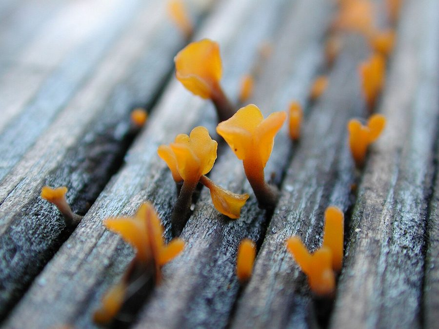

पीली जेलीFan-shaped Jelly Fungus
Dacryopinax spathularia · Dacrymycetaceae · FNG-0009

- Scientific name
- Dacryopinax spathularia (Schwein.) G.W.Martin
- Family
- Dacrymycetaceae
- Hindi
- पीली जेली
- Status here
- native
- IUCN
- not evaluated
When to look कब देखें
Expected mainly in June, July, August, September.
पीली जेली / Fan-shaped Jelly Fungus
Dacryopinax spathularia (Schwein.) G.W.Martin — Dacrymycetaceae
पीली जेली (पंखे के आकार का जेली कवक) — उत्तर प्रदेश के सड़क के किनारों, खेतों के बाड़ों, गीले बांस के खंभों और बारिश में भीगने वाली इमारती लकड़ियों पर मानसून के दौरान (जून से सितंबर) उगने वाला एक बहुत ही छोटा, चमकीला नारंगी-पीला जेली जैसा कवक है। यह कवक पंखे, चम्मच या छोटी स्पैटुला (spatula) के आकार का होता है, जो लकड़ियों की दरारों से समूहों में निकलता है। गीले मौसम में यह स्पंज की तरह लचीला और जिलेटिनस (gelatinous) होता है, लेकिन शुष्क मौसम में यह सिकुड़कर गहरे लाल रंग की पतली पपड़ी के रूप में बदल जाता है और पानी मिलने पर फिर से अपनी मूल अवस्था में आ जाता है। यह आकार में बहुत छोटा (5 से 15 मिमी) होने के कारण खाने योग्य नहीं है। यह मृत लकड़ियों को सड़ाने और उनके पोषक तत्वों को मिट्टी में मिलाने का काम करता है।
Quick Identification त्वरित पहचान
| Feature | Description |
|---|---|
| Form | Tiny, spatula-shaped, spoon-shaped, or fan-shaped gelatinous bodies (5–15 mm tall) |
| Color | Bright orange-yellow to golden-yellow when moist, drying to a dark reddish-orange or blackish crust |
| Texture | Firmly gelatinous, elastic, and rubbery when wet; hard, brittle, and horn-like when dry |
| Attachment | Attached to wood by a narrow, flattened stalk-like base, growing in rows out of cracks in the wood |
| Gills & Pores | Absent; the smooth outer surface of the fan-like head produces the microscopic spores |
Field tip: Look for tiny, bright orange-yellow rubbery spoons (less than a thumbnail's size) emerging in neat lines from cracks in wet wooden fences or decaying bamboo poles during the monsoon.
Morphology आकारिकी
Biometrics (typical measurements for specimens in Basti):
| Feature | Measurement |
|---|---|
| Cap/body length | 5–15 mm |
| Body width | 2–6 mm |
| Spore print colour | Yellowish-white |
Note: Stipe height and stipe diameter are omitted as this species lacks a distinct cylindrical stipe, possessing a simple flattened attachment base.
Structure: The fruiting bodies (basidiocarps) are geophilous or lignicolous, gelatinous, consisting of a flattened, spoon-like upper part where the hymenium (spore-bearing layer) is located.
Spores: Microscopic, cylindrical, curved (allantoid), measuring 8–11 x 3–4 µm, becoming 1–3 septate at maturity.
Ecology and Substrate पारिस्थितिकी और आधार
Dacryopinax spathularia is a lignicolous saprotroph that causes brown rot in wood. It degrades cellulose and hemicellulose in dead wood, leaving the lignin behind. It shows a strong preference for decaying gymnosperm and angiosperm wood, particularly bamboo (Bambusa) and deciduous structural wood. In Basti, it is highly visible on outdoor wooden structures, reviving rapidly within minutes of receiving rain.
Life Cycle / Phenology जीवन चक्र
- Mycelial Growth: The mycelium spreads through damp woody fibers throughout the wet season.
- Fruiting: Triggered by high moisture and humidity during the monsoon months (June–September).
- Desiccation Tolerance: In dry weather, the fruiting bodies shrink to tiny, inconspicuous dark flakes. When rain falls, they absorb water and swell back to their bright yellow, active state to release spores.
Associated Species and Decay Role सहजीवी संबंध और अपघटन कार्य
- Decay Initiation: Initiates brown rot in decaying wood, facilitating colonisation by other fungi and wood-boring insects.
- Algae Association: Often grows alongside green micro-algae on wet, weathered wood surfaces.
Agricultural / Human Relevance कृषि प्रासंगिकता
Timber decomposer and non-edibility.
- Timber Damage: It decays outdoor agricultural structures, fence posts, and wooden cart parts, weakening wood over time.
- Non-edibility: Due to its extremely small size and tough gelatinous texture, it has no culinary value and is considered non-edible.
- Carotenoid Source: Scientifically interesting as it produces high levels of natural carotenoid pigments (which give it the bright orange-yellow color).
- Biodegradation: Plays an important role in recycling bamboo waste in rural cottage industries in Basti.
Expected Locally स्थानीय रूप से अपेक्षित
Not a field record. Written from published accounts for eastern Uttar Pradesh. No confirmed local sighting yet — if you have seen it, that is what the atlas needs.
अभी तक स्थानीय पुष्टि नहीं। यह विवरण प्रकाशित स्रोतों से है, किसी अवलोकन से नहीं।
Commonly observed on decaying bamboo fences (bans ka ghera) and old wooden posts bordering vegetable patches in Basti district's villages, particularly in Harraiya and Govindnagar blocks. It is easily spotted after monsoon showers due to its bright orange color standing out on dark, weathered wood.
Distribution वितरण
Global range: Pantropical and subtropical distribution; common across Asia, Africa, South America, and the southeastern United States.
In India: Widespread in all warm, humid regions during the rainy season.
In Uttar Pradesh: Abundant on wet wood in all plains districts.
In Basti district / eastern UP: Native resident; very common on bamboo and timber.
Research Questions शोध प्रश्न
- How long does it take for a desiccated Dacryopinax spathularia body to fully expand and begin releasing spores after receiving rain in Basti?
- Does Dacryopinax spathularia show a colonization preference for bamboo wood over local mango wood logs? / क्या पीली जेली आम की सूखी लकड़ियों की तुलना में बांस की लकड़ियों पर उगना अधिक पसंद करती है?
- Can a child find a dry, dark orange crust on a fence post, pour a cup of water over it, and observe it swell into a yellow jelly spoon over 15 minutes? — A simple hands-on hydration experiment.
- What is the structural weight loss rate of bamboo poles colonized by Dacryopinax spathularia over a two-year outdoor exposure period?
- How does the presence of carotenoids protect Dacryopinax spathularia from intense UV radiation on exposed fence posts in Basti? / पीली जेली में मौजूद कैरोटीनॉयड घटक उसे धूप वाले बाड़ के खंभों पर तीव्र यूवी विकिरण से कैसे बचाते हैं?
Similar Species मिलती-जुलती प्रजातियाँ
| Species | Key Difference | हिंदी |
|---|---|---|
| Tremella mesenterica (Witches' Butter) | Grows as a much larger, brain-like or convoluted leafy orange mass (2–7 cm); lacks a spatula shape; parasitizes wood-decaying crust fungi. | पीली जेली कवक (ब्रेन) — बड़ा आकार, मस्तिष्क जैसी बनावट |
| Dacrymyces chrysospermus (Orange Jelly Pat) | Forms irregular, cushion-like golden-orange blobs; lacks a spatula or fan-like shape; grows primarily on conifer wood. | पीला जेली पैच — तकिये के आकार की बनावट, कोनिफर लकड़ी |
| Guepinia helvelloides (Apricot Jelly) | Grows much larger (4–10 cm tall); is trumpet-shaped or ear-shaped, reddish-orange, growing on the ground (not on wood). | खूबानी जेली कवक — बड़ा आकार, कान जैसा रूप, जमीन पर उगना |
Taxonomy & Classification वर्गीकरण
Original description. The American botanist Lewis David de Schweinitz first described the species in 1822 as Merulius spathularia. The American mycologist George Willard Martin transferred it to the genus Dacryopinax as Dacryopinax spathularia in 1948 in Lloydia (Vol. 11, p. 116). The genus name Dacryopinax is derived from the Greek dakry (tear) and pinax (tablet/board). The specific epithet spathularia is Latin for "spatula-shaped."
Subspecies. Monotypic.
Family and order placement. Placed in the order Dacrymycetales, family Dacrymycetaceae, genus Dacryopinax.
Phylogenetic notes. Unlike the majority of jelly fungi which belong to the class Tremellomycetes, Dacryopinax belongs to the class Dacrymycetes, characterized by tuning-fork basidia.
IUCN status rationale. Not evaluated (NE) by the IUCN Fungal Conservation Committee. It is a highly common and adaptable tropical wood-decay species under no threat.
Photo Gallery फोटो गैलरी
References संदर्भ
- Martin, G.W. (1948). New or noteworthy tropical fungi. IV. Lloydia, 11, 111–122. [original description and transfer]
- Bilgrami, K.S., Jamaluddin, S., & Rizwi, M.A. (1991). Fungi of India: List and References. Today & Tomorrow's Printers and Publishers, New Delhi.
- McNabb, R. F. (1965). Taxonomic studies in the Dacrymycetaceae: II. Dacryopinax. New Zealand Journal of Botany, 3(1), 59–72.
- Lowy, B. (1971). Flora Neotropica: Tremellales. Hafner Publishing Co., New York.
- Botanical Survey of India. State Flora Series: Flora of Uttar Pradesh. BSI, Kolkata.
- GBIF Occurrence Data — Dacryopinax spathularia (2026). GBIF taxon key: 2512943.
Source file: species/fungi/mushrooms/jelly_fungus.md